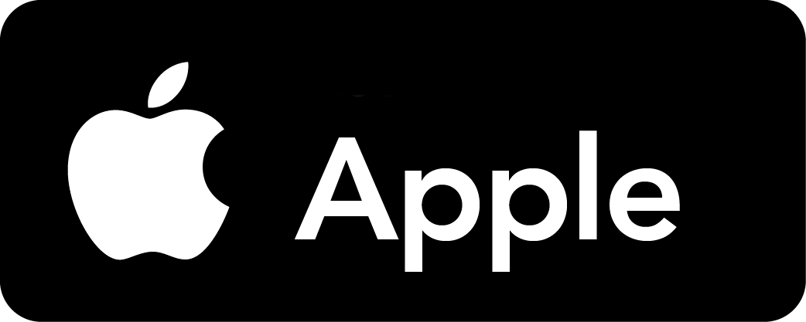

Personal computer Parts
Computer hardware includes the physical parts of a computer, such as the case, central processing unit (CPU), random access memory (RAM), monitor, mouse, keyboard, computer data storage, graphics card, sound card, speakers and motherboard.
Manufacturer Companies
There are many manufacturers that manufacture computer parts, but on this site we will talk about the
companies that
manufacture graphics cards (GPU) and processors(CPU).
About computer
A personal computer, often referred to as a PC, is a computer designed for individual use. It is typically used for tasks such as word processing, internet browsing, email, multimedia playback, and gaming. Personal computers are intended to be operated directly by an end user, rather than by a computer expert or technician. Unlike large, costly minicomputers and mainframes, time-sharing by many people at the same time is not used with personal computers. Primarily in the late 1970s and 1980s, the term home computer was also used. The advent of personal computers and the concurrent Digital Revolution have significantly affected the lives of people in all countries.
Computers Operating systems
Since the early 1990s, Microsoft operating systems (first with MS-DOS and then with Windows) and Intel
hardware
collectively called "Wintel" have dominated the personal computer market, and today the term "PC" normally
refers to
the ubiquitous Wintel platform. Alternatives to Windows occupy a minority share of the market; these include
the Mac
platform from Apple (running the macOS operating system), and free and open-source, Unix-like operating
systems, such as
Linux. Other notable platforms until the 1990s were the Amiga from Commodore, and the PC-98 from NEC.
| Name operating systems | The manufacture company | Version | Production Date | Users number (2024) |
|---|---|---|---|---|
| October 5, 2021 | 400 million | |||
|
|
July 29, 2015 | 200 million | ||
| August 1, 2012 | Only 4.6% of people still usesed | |||
| July 22, 2009 | Only 18.9% of people still usesed | |||
| August 24, 2001 | Only 0.6% of people still usesed | |||
| There is no company that made it. In fact
why? |
There is no specific version | September 17, 1991 |
32.8 million | |
|  | macOS Sonoma | September 26, 2023 |
29.62% of the personal computer |